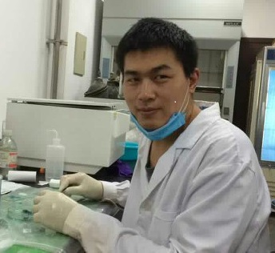

田宝良
个人简历
田宝良，男，农学博士，河南大学生命科学学院。
联系方式
E-mail: tbltzx2005@163.com
电话：13598796853
研究方向
土壤微生物与植物入侵；土壤微生物-植物-昆虫互作
教育背景
2012 – 2015 中国农业大学 农学与生物技术学院 农学博士
2008 – 2011 河北农业大学 植物保护学院 农学硕士
2004 – 2008 河北农业大学 植物保护学院 农学学士
工作经历
2015 – 至今 河南大学 讲师
承担项目
国家自然科学基金委青年项目：丛枝菌根真菌与植物之间互作关系的演化及作用机制 (31600300), 2017.01-2019.12, 主持。
国家重点研发计划：土壤-根系-主要有害生物协同作用机制 (2017YFD0200605), 2017.07-2020.12, 项目承担人。
发表论文
Tian B, Liu Q*, Liu Z, Li P, Wang J. 2015. Insecticidal Potential of Clove Essential Oil and Its Constituents on Cacopsylla chinensis (Hemiptera: Psyllidae) in Laboratory and Field. Journal of Economic Entomology, 108: 957-961.
Ma G, Tian B, Zhao F, Wei G, Hoffmann A.A, Ma C*. 2017. Soil moisture conditions determine phenology and success of larval escape in the peach fruit moth, Carposina sasakii (Lepidoptera, Carposinidae): Implications for predicting drought effects on a diapausing insect. Applied Soil Ecology, 110: 65-72.
发明专利
刘奇志*，田宝良，石旺鹏，刘志龙，周海鹰. 2015. 一种诱集梨木虱若虫的方法, ZL201510390875.1.
刘奇志*，田宝良，石旺鹏，刘志龙，周海鹰，王洁雯，路晓南，李鹏. 2014. 一种北方梨园病虫害综合防控方法， ZL201310529371.4.